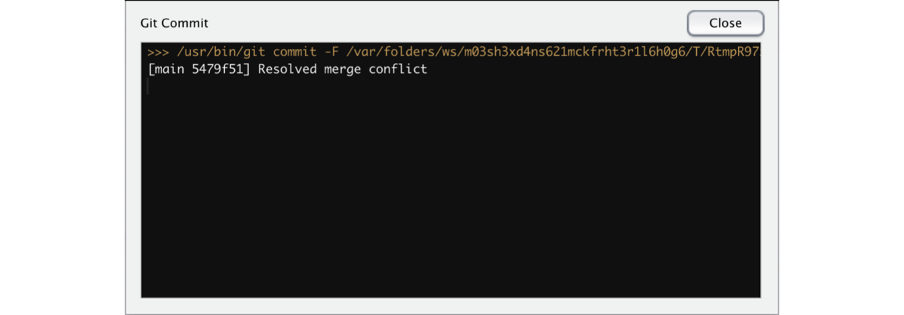

Linking R and GitHub: part 3
Working with others
So far, we have looked at using git to work with your code and a hosting service to have both an online and local copy of your code. While this can be a useful way to work to keep track of the progress you make while working, git really shines when using it to collaborate with others. There are three main ways to use git for collaboration
- Cloning a copy
- Forking a copy
- Working as a team
We’ll look at each of these in turn, using the repositories you made at the end of the previous lab. You’ll need to work in pairs or small groups for this lab.
Cloning a copy
Cloning simply refers to making an exact copy of the current state of a repository to your own local computer, including information on the commits made to that repository. The main limitation to this approach is that the cloned repository is independent of the original, so any changes you make cannot be easily integrated into the original using git, but would have to be added by hand. Further, this means that if the code in the original repository is changed, this will not propagate to your copy.
So why do this? If your main interest is in making a copy that you can develop separately to the original (i.e. changing the purpose or application of the code) then this is a great approach. It is also quite useful if you just want to check someone’s code to see how they tackled a given problem. It is also a fairly straightforward operation (we previously looked at how to clone someone else’s GitHub repository from the command line).
Cloning in RStudio
To clone an existing repository in RStudio, we simply proceed in the same way as we would to set up a new project, with the exception that we do not need to make the new repository on GitHub first. Simply open RStudio, change to the directory holding your local repositories and start a new project. Click on [Version Control], then [Git] (Clone a project from a Git repository).
Now go to your partner’s GitHub page and find the repository you want to copy. Click on the green [Code] button and copy the URL. Go back to RStudio and and enter this in the box labeled [Repository URL]. For the next box, either accept the given project directory name (this should be the same as the GitHub repository) or change this to a new one. The final box gives the directory where the repository will be cloned to on your computer. Make sure this is ok, and that the check-box [Start in new session] is checked. Now click [Create project] to make the new project, which should be automatically populated with the files from your partner’s repository.
Note that cloning a repo in this way does not add it to your GitHub account (if you check your page you won’t see it there). To add it:
- Go to your GitHub page
- Create a new repository with exactly the same name as your RStudio project
- Do not check
Initialize this repository with a README - Click [Create Project]
Next, go to RStudio and open the R project file from the repository that you just cloned. Open a shell by clicking [Tools] > [Shell], then run the following commands:
git remote set-url origin https://github.com/USERNAME/REPOSITORY.git
git branch -M main
git push -u origin mainCheck that all this works, then delete this repository before moving to the next part. As a reminder, you need to delete the local folder holding the repository, then go to the GitHub page > [Settings], and scroll down to the Danger Zone at the end of the page. Click [Delete the repository] and follow the prompts.
Forking a copy
Forking serves two purposes in git. First, it allows endless amounts of Good Place jokes and second it allows you to copy another person’s repository, but retain a link to the original repository. This is an ideal solution if you want to contribute code to an existing project. Forking creates your own local and remote repository and you can modify the code and commit it using the methods we have previously looked at. This allows several people to be working independently on a project. Each has a linked copy of the code and can make changes/additions/deletions as necessary. However, only the project maintainer can push changes to the official repository. They will need to decide which commits proposed by developers get included in the official version.
If you fork a repository, you are making a copy of it as it exists at that moment. This means that any changes that are made to the remote repository by the owner will not automatically show up in your local repo. It is a good idea, when working with a forked repo to always run git pull or click the [Pull] button each time you work on it. This will copy down any changes to your local repository.
Forking with RStudio
The first step is to fork the repository of interest on GitHub. Go to your partner’s GitHub page and find the repository of interest. On the landing page, look for the [Fork] button on the right-hand side of the page. This will make a new forked copy in your GitHub account, and will take you to that page. If you look under the repository name on the left hand side of the page you should see something like forked from USERNAME. Now you have this, you can clone it to your computer to create the local repo. You probably know the routine by now, but click on the green [Code] button and copy the URL. Open RStudio, go to [File] > [New Project]. Then click on [Version Control], select [Git] and enter the URL on the next page that appears. Now click [Create project] to clone the files and start your new project.
Assuming that you have been successful, you can now go ahead and make changes to the code before pushing this back to your GitHub. We’ll look at how to propose these changes be including in the original project, and how the project owner can accept (or reject them).
As an example, I’m going to assume that you forked the repository containing the plot_ts() function we made in the previous lab (but feel free to use a different repo and/or make different changes). Here, I’m going to modify the function to include a new argument annoy_brian, which will plot using ggplot2 rather than base R graphics. The new function will look like this:
plot_ts <- function(x, y, annoy_brian = FALSE, ...) {
library(ggplot2)
if (annoy_brian) {
ggplot(aes(x, y), data = data.frame(x, y)) +
geom_line() +
geom_smooth() +
theme_minimal()
} else {
fit <- mgcv::gam(y ~ s(x))
plot(x, y, type = 'l', ...)
lines(x, fitted(fit), col = 2, lwd = 2)
}
}Now load the CO\(_2\) data and check that the modifications work:
source("plot_ts.R")
co2 <- read.csv("co2_mm_mlo.csv")
plot_ts(co2$decdate, co2$interpolated, annoy_brian = TRUE)Once you finished with your changes and modifications, stage and commit your changes, then push to GitHub. In order to merge this back to the original repo, you need to create a pull request. If you now go to the repository page, you will see a banner telling you that your branch is ahead of the original branch, together with options to compare your changes and create a pull request.
If you click the [Compare] icon, this will take you to a page that shows the difference between the files you have changed. Text in red has been removed, in green has been added. Note that at the top of this page there are drop down menus that allow you to also change between different forked repositories and different branches. If all the changes are ok, click on the green button [Create pull request]. You can now add a message describing the changes you have made, and why these should be incorporated into the original repository. Do this now, and then click [Create pull request] to submit the pull request.
Once submitted, you’ll see a page containing all the details that you added, as well as a message stating if there are any conflicts between the two branches. At the same time, an email will have been sent to the owner of the original repository informing them of the pull request.
If someone else has forked a copy of your repo, then you should be receiving an email about their pull request. Either click the link in this email or go to your GitHub page, and you should see that there is a pull request listed. Click [Pull requests] to see all your outstanding PRs. Click on the one listed there, and you will see the details including the message accompanying the request. Assuming that there are no conflicts, all the remains to be done is to merge the request ([Merge pull request]). There is a field below this button for adding a comment, which can be used if there are issues with the proposed change. You can also close the pull request here without merging it.
While this will have merged the changes into your remote repository, the last thing we need to do is to update your local copy. Go back to RStudio and the R project associated with this repository. Click on [Pull] on the Git tab to download and merge the changes. You can check that this has worked by clicking on the [History] button to show the git log, or by simply opening the files that were changed to make sure the changes are there.
Working as a team
The last method that we’ll look at for collaboration through git is by setting up a team. Unlike forking, this sets a single repository but allows every team member to add changes. This is a very good method when you are starting a project together, rather than making suggested changes to an existing project. The downside to this is that it makes it easier for problems and conflicts to arise through miscommunication or lack of planning. To minimize problems, it is recommended that:
- Each team member works on their own branch of the repository
- One team member is nominated to control merging the different branches as development proceeds
As with forking, if you work on a collaborative project, it is a good idea to always run git pull or click the [Pull] button each time you work on it. This will copy down any changes to your local repository.
Setting up collaborators on GitHub
We’ll do this exercise in pairs again. Each person should start creating a new repository on GitHub, and initialize with a README (you can also use an existing repository if you prefer). I’d recommend creating a new repo, just to get more experience in setting up repositories: open RStudio and create a new project using version control. Get the URL from GitHub to link the project to your new repo. (You should be fairly familiar with doing this by now, but refer back to yesterday’s lab for details.)
We’ll now add your partner as a collaborator. Go to your repository on GitHub, click on [Settings] at the top of the page and select [Manage access] from the left hand menu. On the next page, click the green button [Invite a collaborator]. You may be prompted for your password, then this will open a search window where you can find other people on GitHub by their user name or email. Find your partner, then click the button [Add USERNAME to this repository]. They should now receive an email letting them know that you have added them as a collaborator.
If you’re received an email inviting you to collaborate, you need to clone this repository (don’t fork it!). Go to the linked Github repo page, and copy the URL. Now go to your RStudio, create a new project using version control and use the copied URL. Once everything is set up, create a branch for the additions you are going to make by clicking on the little icon with the purple boxes in the top right of the Git tab in RStudio. Add a new branch called test, and initialize it.
Add some R code in a script, save it and stage/commit/push to GitHub. One you are done, submit a pull request for this work to merge the test branch back into main. Now either you or your partner can accept this pull request.
As you have now updated the remote copy of main you will need to pull these changes back to your local repository. Go to RStudio and use the dropdown menu in the top right of the Git tab to change back to main. Now click the [Pull] button to download all the updates. You can also delete the test branch now by switching to the terminal and typing
git branch -d testDealing with conflicts
While merging will work well most of the time, conflicts can occur if a file if the same part of the same file is changed on both branches that you are trying to merge. git tracks changes line-by-line in any file, so if collaborators are working on different parts of the same file, this won’t cause a problem. However, when collaborators work on the same lines within the same file, this will lead to merge conflicts. Dealing with these can be frustrating as you will need to find the conflicts and decide which to keep and which to drop.
The easiest way to understand how to deal with a conflict is with an example1. We’ll walk through this here, then you and your partner should try to recreate this using the repository that you set up in the previous step. In our example, two people are collaborating on a project; let’s call them Brian and Blake. Both of them add some text to line 3 of the README.md file. Brian adds:
Brian says do NOT use ggplot2And Blake adds
Blake says ALWAYS use ggplot2Brian then runs through the usual stages of collaborative working with git:
- pull (to check for any updates)
- stage
- commit
- push
Blake (who, let’s say, had been distracted by an online auction of Jar-Jar Binks memorabilia) then starts to run through the same steps, but when he pulls updates before making his commit, he gets the following message:
So he was not able to pull the updates, as these would overwrite the local changes. As git doesn’t know the correct version it makes you choose. The options given are to either commit the local work first (prior to pulling), or ‘stash it’ (basically making a copy of the local work outside of the repository and then reverting the local changes). As Blake nearly always does what he is told, he tries the first of these, by staging and committing through RStudio. Unfortunately, this still doesn’t work, and he gets a message that there is still a conflict:
So this has not resolved the problem, simply moved it to a different part of the git process. The issue remains that both contributors have changed the same line, and Blake can neither pull the remote changes or push the local ones. Note that conflicted file is now marked with orange Us in the Git tab to indicate that there is an unresolved conflict. In the ‘Review changes’ panel, there was a preview of the changes, and if you now open the README.md file, you will see this:
<<<<<<< HEAD
Blake says ALWAYS use ggplot2
=======
Brian says do NOT use ggplot2
>>>>>>> 35a2c18e7a139ee02e3af6ba21416628f1ee185dgit has updated the local file to provide detail on the changes, bounded by <<<<<<< HEAD and >>>>>>> commit identifier. The upper text is the local copy and the text below the ======= is the remote copy. Blake now has to choose which line to keep, and delete everything else. In this case, he’s feeling daring and will keep his own line, so he will need to delete the <<<<<<< HEAD, =======, >>>>>>> commit identifier and Brian’s text.
Now, he stages, adds a commit message (e.g.resolving merge conflict or this is the end of my phd). If everything checks out, he gets the following message:

He can then push this to GitHub. If there is a still a conflict, he can just repeat this process until everything is resolved. Note that when Brian next works on the repo, he will need to pull these changes.
Roll your own conflict
Now try to follow the steps of this example with your partner. You can either use an existing repository and invite the other person to collaborate, or set up a new one specifically for the purposes of this exercise. The steps are:
- Establish a collaborative repository
- Both people edit the same line in a file
- Person 1 pulls, then stages, commits and pushes their changes
- Person 2 tries to pull, then
- Resolves the conflict
- Stages, commits and pushes
- Person 1 pulls the new changes
Issues
One of the potential downsides to collaborating through git (rather than forking) is that each collaborator has unilateral power to make changes once the conflicts are resolved. An alternative approach would be to raise an issue through GitHub, rather than making the change. Each GitHub repository has a page for issues - to see this, click on the following link:
One the next page, click on [New issue] and then fill out the form on the next page. Note that you can @ people using their GitHub username. This will send them an email noting that an issue has been raised. Each issue then has its own page with a threaded discussion, where you and your collaborators can discuss the best solution before making any changes. Note that it is good practice to close an issue once you have decided on what to do. In keeping with the goals of git, closing an issue does not delete the discussion, and so you can refer back to this at any point.
Bailing out
If, during the merge, you get confused about the state of things or make a mistake, use git merge --abort at the command line to abort the merge and go back to the state prior to running git merge. Then you can try to complete the merge again.
Further help
There are a number of good sources for working with git and GitHub, including the Happy Git site that formed the basis of this material. Additional help can be found in the following book:
Footnotes
Modified from https://ohi-science.org/data-science-training↩︎